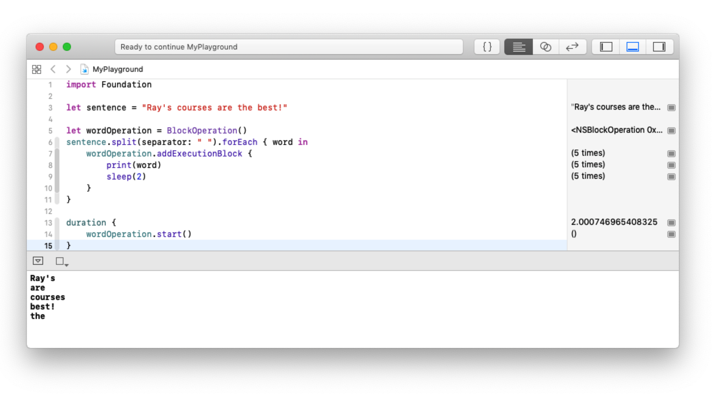

Тепер, коли ви майстер ніндзя в Grand Central Dispatch, прийшов час переключитися на операції. У деякій мірі операції працюють дуже схоже на GCD, і це може збивати з пантелику допоки ви не побачите різницю при першому використанні паралелізму.
І GCD, і операції дозволяють вам відправляти шматок коду, який повинен бути запущений в окремому потоці; однак операції дозволяють краще контролювати відправлене завдання.
Як згадувалося на початку книги, операції будуються поверх GCD. Вони надають додаткові функції, такі як залежності від інших операцій, можливість скасування виконуваної операції і об'єктно-орієнтована модель для підтримки більш складних вимог.
Повторне використання
Одна з перших причин, по якій вам може знадобитися створити операцію, полягає в можливості її повторного використання. Якщо у вас є просте завдання «запусти і забути», то швидше за все, вам підійде GCD.
Операція - це об'єкт Swift, тобто ви можете передавати вхідні дані для настройки завдання, реалізації допоміжних методів і т.д. Таким чином, ви можете взяти завдання і виконати його коли-небудь в майбутньому стільки раз, скільки це потрібно.
Стани оперцій
Операція має кілька можливих станів, які відбуваються в різних частинах її життєвого циклу:
- Коли черга буде створена і готова до запуску, вона перейде в стан isReady.
- У якийсь момент ви можете викликати метод запуску, після чого черга перейде в стан isExecuting.
- Якщо додаток викликає метод cancel, черга переходить в стан isCancelled, перед тим як перейти в стан isFinished.
- Якщо чергу не скасувати, вона перейде безпосередньо з isExecuting в isFinished.
Всі із вищезазначених станів є булевими read-only властивостями класу Operation. Ви можете звернутися до них в будь-який момент під час виконання завдання, щоб побачити на якому вони етапі.
Клас Operation обробляє всі ці переходи станів автоматично. Єдині два стани, на які ви можете безпосередньо впливати - це стан isExecuting, запустивши операцію, і стан isCancelled, якщо ви викликаєте метод cancel у об'єкта.
BlockOperation
Ви можете швидко створити операцію з блоку коду, використовуючи клас BlockOperation. Зазвичай ви просто передаєте замикання в його ініціалізатор:
BlockOperation управляє паралельним виконанням одного або декількох замикань в глобальній черзі за замовчуванням. Це забезпечує об'єктно-орієнтований враппер для додатків, які вже використовують OperationQueue (обговорюється в наступному розділі) і не хочуть також створювати окрему DispatchQueue.
Будучи Операцією, вона може використовувати переваги повідомлень KVO (Key-Value Observing), залежностей і всього іншого, що забезпечує Операція.
З назви класу не відразу видно, що BlockOperation управляє групою замикань. Він діє аналогічно до dispatch group в тому сенсі, що він позначає себе як завершений, коли всі замикання завершені. У наведеному вище прикладі показано додавання одного замикання до операції. Однак ви можете додати кілька елементів.
Note: Завдання в BlockOperation виконуються паралельно. Якщо вам потрібно, щоб вони запускалися послідовно, відправте їх у приватну чергу DispatchQueue або налаштуйте залежності.
Багатоблокові оперції
У матеріалах, прикріплених до цієї глави ви знайдете playground під назвою BlockOperation.playground. Цей playground надає функцію duration за замовчуванням для синхронізації вашого коду, яку ви незабаром будете використовувати.
Якщо ви хочете додати замикання до BlockOperation, вам потрібно буде викликати метод addExecutionBlock і просто передати в нього нове замикання. Вставте наступний код в playground:
Наведений вище код розбиває речення за пробілами, таким чином ви отримаєте масив слів. Для кожного слова до операції додається інше замикання, після чого кожне слово друкується як частина wordOperation.
Відкрийте консоль (⇧ + ⌘ + Y), а потім запустіть playground. Речення виводиться у консоль по одному слову в рядку, але у довільному порядку. Пам'ятайте, що BlockOperation виконується паралельно, а не послідовно, і, отже, порядок виконання не є детермінованим.
Прийшов час вивчити невеликий урок по паралелізму за допомогою згаданої раніше допоміжної функції тривалості (duration function).
Додайте затримку в дві секунди відразу після виклику друку зі наступним рядком:
Потім інкапсулюйте виклик start наданого функцією duration:
Подивіться на загальний час, що відображається в рядку, де ви викликаєте duration.
Незважаючи на те, що кожна операція триває дві секунди, загальний час самої операції складає трохи більше двох секунд, а не 10 секунд (п'ять виводів по дві секунди кожен).
Пам'ятайте, що BlockOperation працює аналогічно до DispatchGroup - це означає, що буде легко дізнатися, коли всі операції завершені.
Створений completionBlock буде виконано після завершення всіх замикань, доданих в операцію. Додайте наступний код у playground, перш ніж викликати duration, а потім запустіть знову, щоб побачити результат:
Підклас Operation
Клас BlockOperation відмінно підходить для простих завдань, але при виконанні більш складної роботи або для багаторазового використання компонентів вам потрібно створити підклас Operation.
Відкрийте Concurrency.xcodeproj у папці із прикріпленими матеріалами. Створіть і запустіть проект, а потім натисніть кнопку «Show Tilt Shift» у верхній частині екрану.
Ви побачите приклад того, з чим ви будете працювати наступні декілька розділів. Зображення, що відображається у верхній частині екрану, є вихідним зображенням. Через кілька секунд обробки під ним з'явиться зображення зі зміщеним нахилом (Tilt Shift).
Tilt shifting - це метод, який використовується у фотографії для зміни глибини різкості. Якщо ви порівняєте два зображення, ви побачите, що центр нижнього зображення все ще знаходиться у фокусі, але все навколо нього розмито.
Приклад проекту містить файл TiltShiftFilter.swift, який є підкласом CIFilter. Зверніть увагу, що він відмінно працює в освітніх цілях, оскільки код дуже простий і зрозумілий, але далеко не оптимальний з точки зору продуктивності. Якщо вам потрібно використовувати tilt shift в реальному додатку, то існують набагато кращі рішення.
Якщо ви вже натиснули кнопку «Show Table View», ви, ймовірно, встигли побачити порожню табличку! Час її побудувати.
Tilt shift не правильним шляхом
Оскільки за словами майстра Йоди, «найбільший вчитель - це невдача», ви спочатку будете реалізовувати tilt shift простим способом, яким спробували б реалізувати це більшість новачків.
Як згадувалося раніше, ви можете побачити, як виконується tilt shift, глянувши на TiltShiftFilter.swift. Якщо ви не знайомі з Core Image, ознайомтеся з «Core Image Tutorial: Getting Started» за адресою https://bit.ly/2TF8Rba. Хоча це і не потрібно для продовження, але може бути корисно для розуміння роботи фільтрів в наступних прикладах.
Приклад проекту містить десять зображень в своєму Asset Catalog для використання. Для простоти вони названі просто від 0 до 9. Відкрийте TiltShiftTableViewController.swift у вікні редактора Xcode і додайте наступний код в метод tableView(_: cellForRowAt :), безпосередньо перед рядком return cell:
Він дозволить отримати зображення з Asset Catalog. Потім додайте наступний код, щоб відфільтрувати зображення перед рядком return cell:
Вам потрібно відфільтрувати зображення, використовуючи TiltShiftFilter, і, якщо все вийде, ви повинні отримати вихідне зображення. Якщо щось піде не так, то виведеться повідомлення про помилку. Вихідне зображення має тип CIImage. Щоб відобразити його, вам потрібно перетворити його в UIImage. Додайте наступний код над оператором return cell:
Вам потрібно використати CIContext, щоб перетворити його назад в UIImage, який ви можете відобразити y PhotoCell.
Note: Ваш телефон буде виконувати операції Core Image на порядок швидше, ніж ваш Mac. Якщо ви працюєте на симуляторі, змініть кількість рядків в поданні таблиці з 10 до двох. Я рекомендую вам протестувати роботу додатку на реальному пристрої iOS!
Переконайтеся, що консоль Xcode відкрита (⇧ + ⌘ + Y), а потім зберіть і запустіть проект.
Як тільки додаток запуститься, натисніть на кнопку Show Table View і подивіться вікно консолі. Залежно від швидкості вашого пристрою або симулятора, ви побачите, що фільтрація займає небагато часу. Якщо ви будете прогортати табличку, ви побачите ривки, коли програма намагатиметься виконати фільтр tilt shift.
Tilt shift майже правильним шляхом
На цьому етапі опрацювання Core Image потрібно помістити в підклас Operation. Вам знадобиться як вхідне, так і вихідне зображення, тому нам потрібні відповідні дві властивості(properties). Вхідне зображення ніколи не повинно змінюватися, тому є сенс передати його ініціалізатор і зробити private.
Створіть новий Swift файл з ім'ям TiltShiftOperation.swift і замініть його вміст наступним:
У файлі TiltShiftTableViewController.swift варто створити властивість context.
Якщо ви зробите його простою властивістю TiltShiftOperation, ви будете мати новий контекст для кожного екземпляра TiltShiftOperation. CIContext слід використовувати повторно, коли це можливо, і в документації Apple явно зазначено, що CIContext є потокобезпечим, тому ви можете зробити його статичним.
Додайте властивість context на початку вашого класу:
Все, що залишилося зробити зараз, це перевизначити метод main, який буде викликатися при запуску вашої операції. Ви можете скопіювати код прямо з методу tableView (_: cellForRowAt :) і просто зробити кілька незначних змін:
Зверніть увагу, що всі посилання на table view cell видалені, а контекст є статичною властивісттю, але в іншому все працює однаково. Якщо фільтр застосований успішно, outputImage матиме значення, але якщо щось піде не так, то воно залишиться nil.
Все, що залишилося зробити зараз - це переробити table view, щоб використовувати нову операцію. Якщо ви хочете запустити операцію вручну, ви можете викликати її метод запуску. Поверніться до TiltShiftTableViewController.swift і оновіть tableView(_: cellForRowAt :), щоб він виглядав так:
Перш ніж ви знову запустите додаток, приділіть час тому, щоб розглянути нові зміни і зрозуміти їх вплив на роботу кінцевого користувача.
Реальність виправдала ваші очікування? Чи були ви здивовані відсутністю приросту продуктивності між цією версією програми і попередньою версією? Коли ви викликаєте метод start безпосередньо в операції, ви виконуєте синхронний виклик поточного потоку (main потоку). Таким чином, хоча код був перетворений в підклас Operation, ви ще не використовуєте можливості паралелізму, що надаються в ньому.
Note: Крім того, що виклик start запускає операцію в поточному потоці, він також може привести до помилки, якщо операція ще не готова до запуску. Як правило, ви не повинні викликати запуск вручну.
У наступному розділі ви почнете по-справжньому використовувати переваги класу Operation і вирішите цю синхронну проблему.